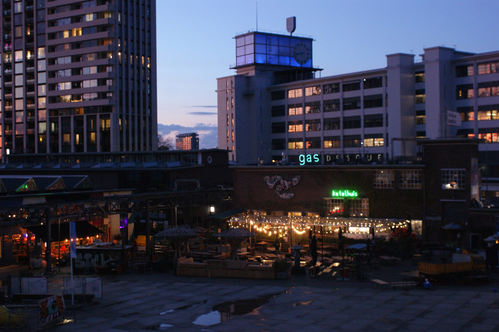

LESLOY VISUALS / 01
HET
WERK.
Fotografie voor mensen, auto's, momenten en ideeën. Klik op een beeld om het fullscreen te bekijken.
GESELECTEERD WERK
BEKIJK HET
GROOT.
Mijn portfolio groeit met iedere shoot. Voor nu laat ik alleen mijn eigen werk zien — geen stockfoto's, geen opvulling.



NEXT SHOOT
YOUR
TURN.
Heb je een idee dat hier tussen hoort? Stuur je aanvraag en laten we iets maken.